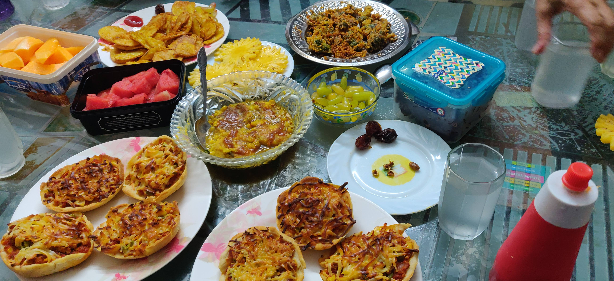

Ramazon roʻzasi qanday tutiladi: qoidalar, istisnolar va fidya
Ramazon roʻzasi (sawm) — islomning besh rukinidan biri boʻlib, balogʻatga yetgan, sogʻlom musulmonlarga farz. U tong (subh) dan quyosh botguncha (magʻrib) davom etadi. Quyida roʻzaning qoidalari, kim roʻza tutmasligi mumkinligi, qazo, fidya va kaffora faqat keng eʼtirof etilgan (asosan hanafiy mazhabi) manbalar asosida tushuntiriladi. Mazhablar oʻrtasidagi farqlar alohida koʻrsatilgan.

Ramazon oyida roʻza tutish — musulmonlar uchun eng muhim ibodatlardan biri. Quyida roʻza nima ekani, u qanday tutilishi, kimga farz va kim roʻzani keyinga qoldirishi yoki uning oʻrnini toʻldirishi mumkinligi faqat keng eʼtirof etilgan diniy manbalar asosida bayon etiladi. Oʻzbek jamiyatida asosan tarqalgan hanafiy mazhabi nuqtayi nazariga tayaniladi; mazhablar oʻrtasida farq boʻlgan joylarda bu alohida qayd etiladi.
Roʻza nima
Ramazon oyida roʻza tutish (arabcha: sawm) — islomning besh rukinidan biri va balogʻatga yetgan, sogʻlom, roʻzaga qodir musulmonlarga farz. Uning asosi Qurʼoni karimda, Baqara surasining 183–185-oyatlarida bayon etilgan: roʻza, undan avvalgilarga farz qilinganidek, taqvo (Allohdan qoʻrqish-ogohlik) hosil boʻlishi uchun belgilangan.
Qachon tutiladi
Roʻza har kuni tong (fajr/subh) dan quyosh botgunga (magʻrib) qadar tutiladi. Tongdan oldin saharlik (suhur) qilinadi, kun botganda esa iftorlik — odatda xurmo bilan ochiladi. Ramazon — islomiy hijriy-qamariy taqvimning 9-oyi; oyning boshlanishi va tugashi yangi oyni koʻrish (hilol) bilan belgilanadi. Qamariy yil quyosh yilidan qisqa boʻlgani uchun Ramazon har milodiy yilda taxminan 10–11 kun oldinga suriladi.
Nima roʻzani buzadi
Roʻza vaqtida ataylab yeyish, ichish, chekish yoki jinsiy yaqinlik roʻzani buzadi; ataylab qusish ham roʻzani buzadi. Unutib, bexosdan yeb yoki ichib qoʻyish esa keng eʼtirof etilgan fikrga koʻra roʻzani buzmaydi.
Kim roʻza tutmasligi yoki keyinga qoldirishi mumkin
Balogʻatga yetmagan bolalarga roʻza farz emas. Jiddiy kasallar — roʻza tutish kasallikni ogʻirlashtirsa yoki tuzalishni kechiktirsa — roʻza tutmay, soʻng kunlarni qazo qiladi. Shariat belgilagan masofaga safar qilayotgan yoʻlovchilar roʻzani keyinga surib, keyin qazo qilishi mumkin. Homilador va emizikli ayollar — roʻza ona yoki bolaga zarar yetkazsa — keyinga qoldirib, kunlarni qazo qiladi. Hayz koʻrayotgan ayollar roʻza tutmaydi va keyin qazo qiladi. Keksa yoki surunkali, tuzalmas kasallikdagi, kunlarni hech qachon qazo qila olmaydigan kishilar esa roʻza oʻrniga fidya toʻlaydi.
Qazo, fidya va kaffora
Qazo — qoldirilgan kunlar oʻrniga keyin shuncha kun roʻza tutish. Fidya — roʻza tuta olmaslik doimiy boʻlganlar (masalan, surunkali kasal yoki juda keksa kishilar) uchun har bir qoldirilgan kun evaziga bir muhtojni ovqatlantirish. Kaffora — roʻzani boshlab qoʻyib, uzrsiz ravishda ataylab buzgan (yeyish, ichish yoki jinsiy yaqinlik bilan) kishiga vojib boʻladigan ogʻirroq jazo: hanafiy mazhabida 60 kun ketma-ket roʻza tutish, bunga qodir boʻlmasa 60 nafar muhtojni ovqatlantirish. Eslatma: agar kishi Ramazon roʻzasini umuman boshlamagan boʻlsa, unga gunohkor boʻlsa-da, faqat qazo lozim boʻladi, kaffora emas.
Mazhablar oʻrtasidagi ayrim farqlar
Kaffora qaysi holatda vojib boʻlishida mazhablar farq qiladi: hanafiy mazhabida roʻzani boshlab, uni ataylab yeyish/ichish yoki jinsiy yaqinlik bilan buzganda kaffora lozim boʻladi; ayrim boshqa mazhablar (masalan, shofiʼiy) 60 kunlik kaffora faqat jinsiy yaqinlik bilan buzilgan holatga xos deydi. 60 kun / 60 muhtoj miqdori esa sunniy mazhablarda umumiy. Homilador va emizikli ayollar faqat qazo qiladimi, fidya toʻlaydimi yoki ikkalasimi — bu masalada ham mazhablar oʻrtasida farq bor.
Ramazon oyining yakuni
Ramazon oyi Ramazon hayiti (Iyd al-Fitr) bilan — Shavvol oyining 1-kunida yakunlanadi. Ramazon hayiti kuni roʻza tutish man etilgan.